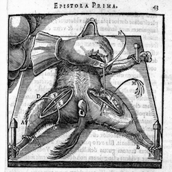
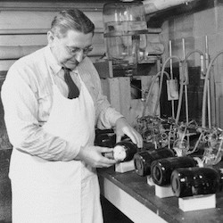

ABOUT
Animal testing has been around historically for centuries. One of the first written animal testing records date back to the 4th and 3rd centuries BCE with Aristotle and Erasistratus. It is thanks to animal testing that we are able to buy common household products and cosmetics without having to worry about the dangers of harming ourselves. However, development in alternative testing have risen since the past decades, striving to one day replace animal testing such as the Draize test. The Draize test is a method of animal testing that measures the severity of chemical damage on the eyes by studying Rabbit's eyes. Application of chemical solutions are applied to the Rabbit's cornea and then observed over a period of time. Several alternative test methods have been created to steer away from using Rabbits. Below is a timeline on the development and history of animal testing.
-

Origin of Animal Testing
304 - 258 BCE
First written records of animal testing were in Ancient Greek. Aristotle and Erasistratus were one of the first to perform experiments.
-
FD&C Act
1938
Federal Food, Drug, and Cosmetic Act passed, requiring safety testing of drugs and cosmetics. This act permitted the use of animals for testing of these drugs.
-

Draize Test
1944
FDA toxicologist John Draize developed the Draize eye irritation test as a toxicoogy test for cosmetic compounds.
-
Alternative Testing
1989 - 2009
Research into developing alternative methods to replace Draize tests began and in 2009, two methods were accepted by the Organization for Economic Cooperation and Development. One of them being the isolated chicken eye test.
-

Animal Revolution
2013 - present
European Union banned animal testing for cosmetics and also banned the sale of any new cosmetics tested on animals. More and more companies are switching to animal testing free products.